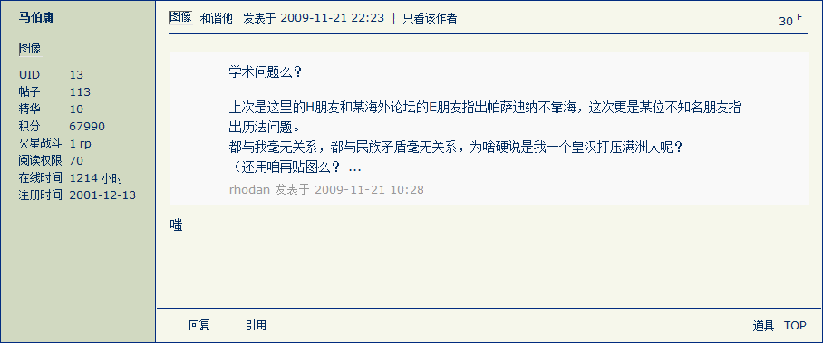
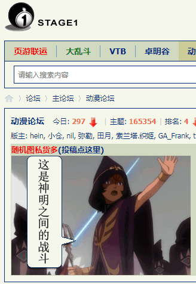
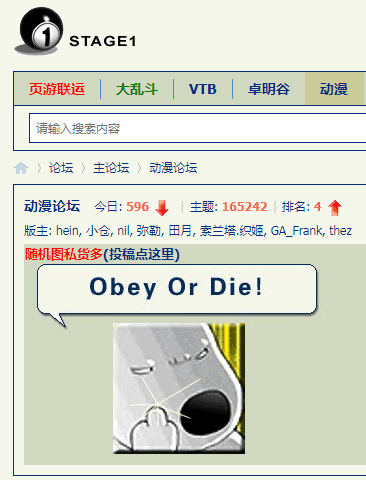

2020-11-04 04:00
小憩片刻，长话短说。
这一宿，繁荣的简体中文互联网上，全是《蚂蚁金服A+H股IPO暂缓》的情报，各大宣传阵地均已沦陷为肃慎情报掮客大肆嘲笑色目资本妄图狂欢盛宴未果沦为笑柄的狂欢盛宴。其它口水不再备份，只摘录「匿名岛夷」之上提纲挈领的一份重要情报：

这份情报对于《范版东幻异闻录》正式命名为《邦昌時代》有着重要参考价值：没有所谓的邦昌时代，中央情报局已经钦定了，只有时代中的邦昌。
简单说，既然地图草稿是「三点五国演义」，而最新局势已经快进到「南北战争」，那么就得参考本位面历史，设定索虏和岛夷的对峙。
曰若稽古，德语中「皇帝」一词是「凯撒」，其实鹅语也一样，这就是用人名作为职称的先例。所以，凡是没有在紫禁城坐龙椅而是于偏殿办公的国家元首，一律唤作「邦昌」，正如苏修美帝为典型的各国「冻蒜式登基」的一把手均唤作「大统领」那样。
因此，自打溥仪去帝号改称满头大汗以来，国际一流和谐宜居之都大批通古斯遗老遗少视角的邦昌，是以北洋为正统的，全国改旗易帜效忠南京政府的那段时间，仿德意志民族神圣罗马帝国例，称为「大空位时期」，然后就接上本朝了。
这样一处理，在国际一流和谐宜居之都充沛的肃慎情报掮客冷嘲热讽「有的人呢，就是没有张邦昌的自知之明」之视角看来，偏殿「联统」之后的历代邦昌列表如下：
| 姓名 | 就职时间 | 离任时间 | 备注 |
|---|---|---|---|
| 袁世凯 | 1912年3月10日 | 1916年6月6日 | 「德不配位」（没有邦昌的自知之明） |
| 黎元洪 | 1916年6月7日 | 1917年7月1日 | |
| 冯国璋 | 1917年7月12日 | 1918年10月10日 | 代理总统 |
| 徐世昌 | 1918年10月10日 | 1922年6月2日 | |
| 周自齐 | 1922年6月2日 | 1922年6月11日 | 国务总理摄行总统职权 |
| 黎元洪 | 1922年6月11日 | 1923年6月13日 | |
| 高凌霨 | 1923年6月14日 | 1923年10月10日 | 国务总理摄行总统职权 |
| 曹锟 | 1923年10月10日 | 1924年11月2日 | |
| 黄郛 | 1924年11月2日 | 1924年11月23日 | 国务总理摄行总统职权 |
| 段祺瑞 | 1924年11月24日 | 1926年4月20日 | 临时执政 |
| 胡惟德 | 1926年4月20日 | 1926年5月13日 | 国务总理代行职权 |
| 颜惠庆 | 1926年5月13日 | 1926年6月22日 | 国务总理代行职权 |
| 杜钖圭 | 1926年6月22日 | 1926年10月1日 | 国务总理代行职权 |
| 顾维钧 | 1926年10月1日 | 1927年6月16日 | 国务总理代行职权 |
| 张作霖 | 1927年6月18日 | 1928年6月3日 | 陆海军大元帅「有德便是才」 |
| 1928年6月4日 | 1949年9月30日 | （大空位时期） | |
| 毛泽东 | 1949年10月1日 | 1959年4月28日 | |
| 刘少奇 | 1959年4月28日 | 1969年11月12日 | 「德不配位」（没有邦昌的自知之明） |
| 毛泽东 | 1969年11月13日 | 1976年9月9日 | 军委主席摄行国家主席职权 |
| 华国锋 | 1976年10月6日 | 1981年6月29日 | 军委主席摄行国家主席职权 |
| 宋庆龄 | 1981年5月16日 | 1981年5月29日 | 名誉国家主席 |
| 邓小平 | 1981年6月29日 | 1983年6月21日 | 军委主席摄行国家主席职权 |
| 李先念 | 1983年6月21日 | 1988年4月13日 | |
| 杨尚昆 | 1988年4月13日 | 1993年3月31日 | |
| 江泽民 | 1993年3月31日 | 2003年3月18日 | |
| 胡锦涛 | 2003年3月18日 | 2013年3月17日 | |
| 习近平 | 2013年3月17日 |
也就是说，四十余年来我所熟悉的迷宫地下城恶人谷当中大批索虏妄议中央的语境当中，对于「城头变幻大王旗」的描述，大概就是这种情况。而岛夷的情况稍微复杂一点，因为南京没有故宫（连遗址都不连片），只有总统府，到底算不算「偏殿」，还在扯皮当中。
2020-11-04 08:00
洗完澡了精神抖擞容光焕发，现在美帝灯塔国大选已经开票了，并且日本韩国的情报掮客也已经开始了996的新一天，繁荣的简体中文互联网上相关情报应该极大充沛。
之前说过了，直到538只猴子投票的时候才能决定大统领归属，之前小人物没能改变历史走向并不代表没有这个可能性。其实小人物背信弃义本身就是个明确的信号，总有一天会「史无前例」的，尤其是舆论渲染成「玄幻」的2020年。
所以，现在关注的不是地球那边三亿只猴子如何投下庄严的一票或者摇旗呐喊，而是为了搜集素材而关注肃慎和/或色目情报掮客不打自招爆料泄漏的国家机密兼宇宙奥秘。不过呢，在当前境内的宣传高压政策之下，有些想定的预案应该不会出现，那么在此简单罗列一下线索。
先说「德不配位」，自打全票冻蒜人民领袖全票修宪取消国家主席任期限制之后，市面上就有这种说法了。结合前例袁世凯刘少奇，可以认为这是幕后黑手炮制剧本当中「邦昌時代」的转折点，要到「新朝」建立之后民怨沸腾再闹赤眉绿林。刚好可以与现在各界人士痛批马家军「丧心病狂超高杠杆企图主动引发次贷危机」「美帝玩脱能让全球买单，兲朝玩脱只会内爆」的诛心舆论结合起来理解。
从内部攻破堡垒能否成功，有两种可能性，而美帝灯塔国大选结果，也有两种可能性。按照正交关系共有四种结果。
而肃慎和/或色目情报掮客炮制的舆论当中，早就按照幕后黑手提供的准备好了各种固定短语。之前说过了，幸亏这帮逗哔按照「大衍之数五十」原则划分「群」以保证「四十九个骗一个」，追着我泄漏国家机密兼宇宙奥秘，我才能接收到比各位读者更多更深层次的信息。
比方说「傻哔绿人董存瑞发动自杀式恐怖袭击，反政府武装传播极端思想」，就是「马家军内爆成功兲朝完蛋」的放风，然后「西肃慎后清国太祖高皇帝」就能登基了，当时可能按照惯例认为「懂王」连任定了，或者献上这份大礼当政绩，连任实在不是谦虚，不会另请高明。
而「傻哔绿人邓世昌裹胁全舰官兵发动自杀式恐怖袭击未果沦为笑柄，极端组织已渗透我军高层」，就是现在这种情况，「马家军内爆“暂缓”执行」，按照最近两党互相揭丑「罗刹间谍川普vs兲朝间谍拜登」的风向，兲朝不爆，罗刹就要爆了，然后土耳其或成最大赢家。
其它相关结论由于各大宣传阵地党性坚定的老审查员以「政治敏感」理由将我的帐号「亦当删去」的缘故，主动声呐或雷达探测戛然而止，后面都是被动探测了，肃慎和/或色目情报掮客自己没有得意忘形肆无忌惮的说出来，我就无法知道。
唉，那阵子生活多美好吖，在四十九个马瓦力簇拥着我提供情报还炫耀「钓鱼」的时候，我这个卡菲勒正在钓它们的情报，钓得正开心呢。
2020-11-04 11:30
中午了，九省通衢の煎蛋之上出现一条重要情报：
不惮以最大的恶意揣测，幕后黑手发现把主席台前三排渗透得如同筛子一般的间谍特务卧底搞不垮兲朝、搞垮罗刹又不够填窟窿，当然就搞欧洲去了也。
思考题：猜猜这位消息灵通人士为啥会赶在昨天肃慎情报掮客一片狂欢的喜庆氛围当中更新上个月的结论，说四万万五千万年未有之大变局「提前了」了呢？
2020-11-05 06:00
刚爬起来酒劲还在头昏脑胀，上网乱转发现美帝灯塔国大选不出意外仍在扯皮当中。威斯康星凭空多出14万未注册帐号，佛罗里达开票率高达103%，都是情理之中的俗套桥段。国际化大都市「华语第一精日论坛」的逗哔精神病自大狂早在二十年前就心血来潮掐指一算，预言了「旧金山另立中央，第四罗马东西分治」的钦定大结局，勿谓言之不预也。
这出大戏还得再看几天，还有色目舆论声称，没什么自由意志，太上国度已经钦定了，川普拜登两败俱伤，佩洛西接任大统领，希拉里急怒攻心自绝于雌权主义者。
回到《异闻录》的构思，只要旧金山的「美利坚太祖高皇帝兼墨西哥摄政」约书亚·亚伯拉罕·诺顿还在活蹦乱跳一天，国际一流和谐宜居之都的党和国家领导人就摆脱不了「偏殿办公的邦昌伪政权」形象。这剧情又不是我钦定的，而是砥砺奋进八年来乃至四十余年来迷宫地下城恶人谷当中充沛的肃慎情报掮客眉飞色舞妄议中央所集体创作的民间故事。
毛邦昌教导我们说：
人民生活中本来存在着文学艺术原料的矿藏，这是自然形态的东西，是粗糙的东西，但也是最生动、最丰富、最基本的东西；在这点上说，它们使一切文学艺术相形见绌，它们是一切文学艺术的取之不尽、用之不竭的唯一的源泉。这是唯一的源泉，因为只能有这样的源泉，此外不能有第二个源泉。
——《在延安文艺座谈会上的讲话》，一九四二年五月二日
习邦昌教导我们说：
古希腊产生了对人类文明影响深远的神话、寓言、雕塑、建筑艺术，埃斯库罗斯、索福克勒斯、欧里庇得斯、阿里斯托芬的悲剧和喜剧是希腊艺术的经典之作。俄罗斯有普希金、果戈理、莱蒙托夫、屠格涅夫、陀思妥耶夫斯基、涅克拉索夫、车尔尼雪夫斯基、托尔斯泰、契诃夫、高尔基、肖洛霍夫、柴可夫斯基、里姆斯基－科萨科夫、拉赫玛尼诺夫、列宾等大师。法国有拉伯雷、拉封丹、莫里哀、司汤达、巴尔扎克、雨果、大仲马、小仲马、莫泊桑、罗曼·罗兰、萨特、加缪、米勒、马奈、德加、塞尚、莫奈、罗丹、柏辽兹、比才、德彪西等大师。英国有乔叟、弥尔顿、拜伦、雪莱、济慈、狄更斯、哈代、萧伯纳、透纳等大师。德国有莱辛、歌德、席勒、海涅、巴赫、贝多芬、舒曼、瓦格纳、勃拉姆斯等大师。美国有霍桑、朗费罗、斯托夫人、惠特曼、马克·吐温、德莱赛、杰克·伦敦、海明威等大师。我最近访问了印度，印度人民也是具有非凡文艺创造活力的，大约公元前1000年前后就形成了《梨俱吠陀》、《阿达婆吠陀》、《娑摩吠陀》、《夜柔吠陀》四种本集，法显、玄奘取经时，印度的诗歌、舞蹈、绘画、宗教建筑和雕塑就达到了很高的水平，泰戈尔更是产生了世界性的影响。
——《在北京文艺座谈会上的讲话》，2014年10月15日
所以《设定集》《异闻录》当中出现的情节，古为今用洋为中用，无一字无来历。
具体举几个来自「人民生活」的例子。
比方说夏天晚上出门酗酒，碰上仨童年才俊身着文化衫手挽手进行墙式冲锋并口称「有的人呢，就是没有自知之明」，如果认为「十目所视」（其中有俩戴眼镜）是针对自己，那叫「受迫害妄想狂」。一定要从自然形态的粗糙的东西当中提炼出生动、丰富、基本的素材来。于是冥思苦想，这情报到底是针对谁呢？对全球七八十亿人全国十四亿人进行全面筛查，按照行政级别从上往下捋呗。结合四十余年来取之不尽用之不竭的生活经历之源泉，剧情自然涌现出来了也。
再比方说于繁荣的简体中文互联网上扯淡，碰上四十九个马瓦力簇拥过来称赞「傻哔绿人」，如果认为通过引用、评论、打分的方式牵扯到自己仅仅是针对自己个人，那叫「举一隅不以三隅反，则不复也」。一定要上纲上线，对科技昌明民智大开的与时俱进蓬勃发展的简体中文互联网上九点四亿网民进行全面筛查，按照福布斯榜排名从上往下捋呗。刚好有情报称，之江乌镇举办的几届互联网大会上，出席者聚餐时马云均缺席，理由是「不喝酒」，于是剧情又自然而然涌现出来了也。
06:11:45 福布斯中国发布中国富豪榜：马云蝉联首富，身家4377.2亿元，马化腾、钟睒睒分列二三位。
还比方说，「美利坚太祖高皇帝兼墨西哥摄政」在屎绿配色的国际化大都市「华语第一精日论坛」当中口称「学术问题欢迎讨论」的时候，对其它陌生网友的批评视而不见，对我提出「连“十九年七闰”都不知道」则向有关部门举报，于是临时工出场以「政治敏感」理由「亦当删去」。
知乎问答№116过程略，只把保留的截图贴上来，很多发言当时就没了，有些截图之后也没了。

第一幅图里面提到「总不至于再被删了吧」字眼，是因为我自己的「学术质疑」被秒删，所以红字部分是转贴其它地方其它网友的质疑。
被秒删的发言针对的是钦定文豪划时代大作当中的这一段：
接下来，让我们推算一下从建安元年到建安五年这五个三月三十日的天干地支。年和月份都比较清楚，一查便知：
建安元年为丙子年，三月辛辰
二年为丁丑年，三月甲辰
三年为戊寅年，三月丙辰
四年为己卯年，三月壬辰
五年为庚辰年，三月庚辰
我说「十九年七闰是历法常识，整整五年一个闰月都没有，就这还『推算』呢？」
如果认为这仅仅是叶公好龙马瓦力学术造假被揭穿之后恼羞成怒气急败坏的典型表现，那是没能透过现象看本质。转过年来这篇狗屁不通的段子就荣获了茅台杯人民文学奖，其中一定蕴涵着充沛的政治和意识形态内容并引领了激烈的政治和意识形态斗争新动向。
结合之后莫名其妙面瘫以及原公司趁我病要我命并有家贼落井下石，不惮以最大的恶意揣测，这是使用「不需要“十九年七闰”的历法」的种族按照传统风俗习惯「或者绿皮书已经写了，没必要存在，或者与绿皮书抵触，不应该存在」的依沙利亚法治国的典型表现。
后来就有充沛的色目文艺爱好者传播「作者最大剧本钦定导演叫人三更死谁敢留人到五更」正能量，并有高学历精英弘扬「没什么自由意志，中央情报局已经钦定了」主旋律，伴随着大批推送的「民科」「杠精」「反社会人格」以应对人民群众汹涌澎湃的「学术质疑」。
再后来，海湾阿拉伯国家纷纷与以色列关系正常化，之前我多次强调「色目太君是同一伙人扮红白脸唱双簧」的观点，有娱乐至死の色目逗哔以《星际争霸》剧情指桑骂槐论证两拨色目太君在太上国度指挥下融合为最强种族的情报①为证。
而当年耳闻目睹「非典」的过程以及面瘫的亲身经历推导出杰克伦敦《前所未有的入侵》计划再开，则有娱乐至死の色目逗哔以《封神演义》剧情指桑骂槐论证从足协主席到军委主席的高第良将在美帝灯塔国大选中输急眼了惦记着「重立地水火风，再开世界」于是被国际奥委会拎走的情报为证，也有国际化大都市「华语第一精日论坛」分配十四万四千张诺亚方舟船票或曰以色列护照的广告②为证。
当然剧情又自动涌现出来了也。
回顾砥砺奋进八年来的国际和国内局势，现实是不是按照色目情报掮客不打自招爆料提供的幕后黑手剧本展开的？直到今天，终于有「导演」出场了，宣称欧洲即将迎来四万万五千万年未有之大变局。
让我们拭目以待。
- ①
无尽轮回指在生命的进化过程中，总会有两个种族被选出来：一个拥有纯粹的本质，拥有适应变革与强大的肉体；另一个拥有纯粹的精神，拥有巨大的灵能潜力。当这两个种族进化到足够的高度，让他们融合，以产生新一代的萨尔纳加。
- ②
 
